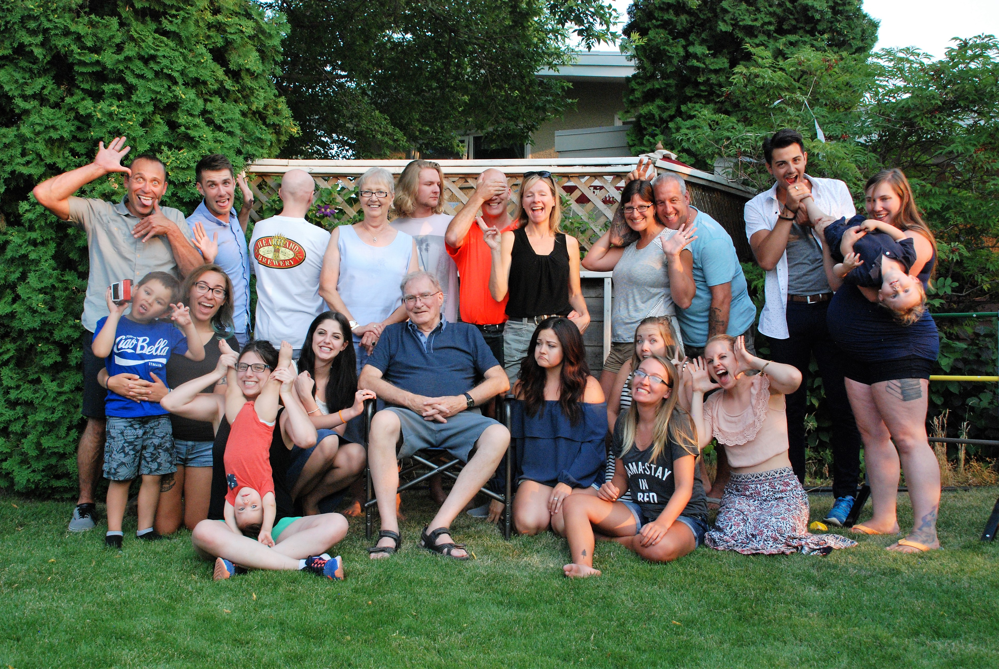
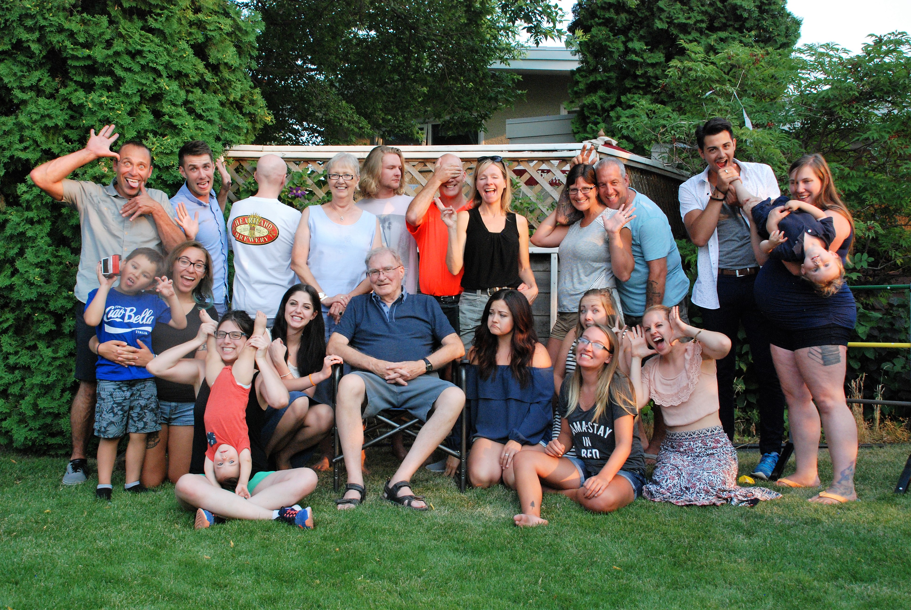

This past summer I came to realize I didn’t know much about my family members who I didn’t grow up around, especially on my dads’ side of the family since we don’t get to go to Canada for visits very often. With the help of my grandma, I started building my family tree.
So far, I’ve managed to go as far back as the 1500s on some branches, other branches I have found very difficult to find due to where that person or their family lived.
The side I’ve always really wanted to know more about is the Czechoslovakian family tree on my moms’ side of the family. Due to how their government is and my family members not talking about the past it has shown to be difficult to find information.
The other family lines I’ve always been interested in are the Scottish and French lines on my dads’ side of the family. These lines have been very well documented over the years making it seem like the information just never stops coming at times.
I have really enjoyed being able to share with my family members, more so with my parents and grandparents, what I have been able to find. Particularly since my dads’ mom passed away from ALS when my dad was in his 20s and my grandpas failing health.
This project has grown to mean a great deal to me and I am excited to have the opportunity to share some hightlights with you.
 
